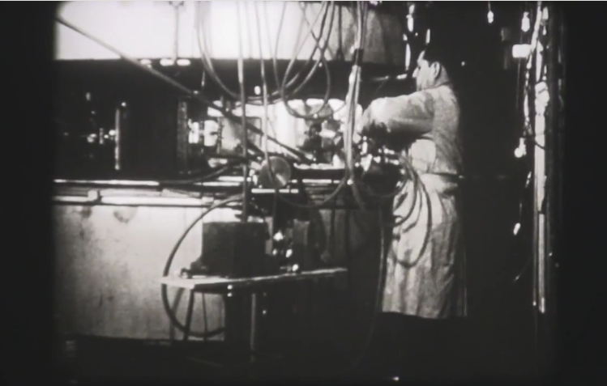

2013 第 46 周新闻速递
注：标题前含有 # 的均是向“科学公园每日快讯”投稿内容。
周一 (2013-11-11)
# 纪录发现 101 号元素钔的影像现世

最近在伯克利实验室发现了一卷黑白影像带，纪录了大约 60 年前第 101 号元素钔的发现过程，重现了传说中的科学家们当时工作的情形。自 20 世纪 40 年代以来，伯克利实验室陷入一场合成新元素竞赛，多数情况下他们赢了。他们共发现及合成了 16 种元素，大部分是位于元素周期表底部的锕系元素。
已退休的伯克利实验室物理学家 Claude Lyneis 在一堆标记销毁的满是灰尘的破旧影像带中发现了这段录像。使用数字转录技术，Lyneis 制作为影片并配上了旁白。该视频已经上传至 YouTube.
来源:
# 新的智能手机应用可探测灾难后的核辐射

图1 伪造的灾难城市中出轨列车
那些能想到的天灾，其唯一后果就是留下一个灾难城市。德克萨斯农工大学模拟了种种灾难场景，比如列车出轨、台风，等等。上周他们测试了一个有趣的东西：一款手机应用软件，它可以用来探测周围的辐射情况。
日本福台事件之后，大家急切想知道受辐照区域的材料所残留的辐射情况，探测的方法之一就是监视伽玛剂量。但是，核物理实验室中常用的伽玛探测设备比较专业，使用也很麻烦，不便于民用。而智能手机目前已经非常普遍，智能手机上的数字摄像头一般使用的是 CCD 或 CMOS 芯片，它们对伽玛射线也很敏感。伽玛射线打在这些数字成像芯片上会产生明亮的白点。 Image Insight 公司和 Advanced Fuel Research 公司一起研发了一套高级算法—— GammaPix Libraries, 可通过数字成像芯片上的少量的伽玛辐射白点计算出伽玛剂量。
上周在德州农工测试了根据 GammaPix 研发的手机应用软件。这款软件可运行在 Android 和 iPhone 上，使用手机自带的摄像头，不需要额外的设备。它可以测试一百米范围内的情况。这款应用可以在紧急情况下快速获得现场数据，并通过无线网络传递出来。只不过，我们不希望有机会用到这款软件。
新闻来源：
# 高能物理预测了四夸克粒子新家族

这是在中国高能物理研究所北京谱仪-III (BES-III) 上做的实验。这是个国际合作团队，他们发现了一种带电的亚原子粒子 ZC(4020), 该粒子属于一个新的四夸克粒子家族。
夸克通常是成对或成三个抱团出现：成对出现的一般是正反夸克对，称之为介子；成三出现的夸克团叫重子，核子（即中子和质子）和超子属于最常见的重子。高能物理中还预测了一种由四个夸克构成的粒子，BES-III 上最新的突破性进展就是发现了这种粒子之一 ZC(4020). 今年四月份在 BES-III 上最早发现的四夸克粒子是 ZC(3900). 合作团队通过正负电子对撞产生的中间粒子 Y(4260), 然后研究它的副产物和衰变，观察到了 ZC(3900) 及 ZC(4020) 的存在。
北京谱仪 (BES-III) 实验在北京正负电子对撞机上进行的，由来自 11 个国家 50 个研究所约 350 名科学家组成了研究团队。
来源: High-Energy Physicists Predict New Family of Four-Quark Objects